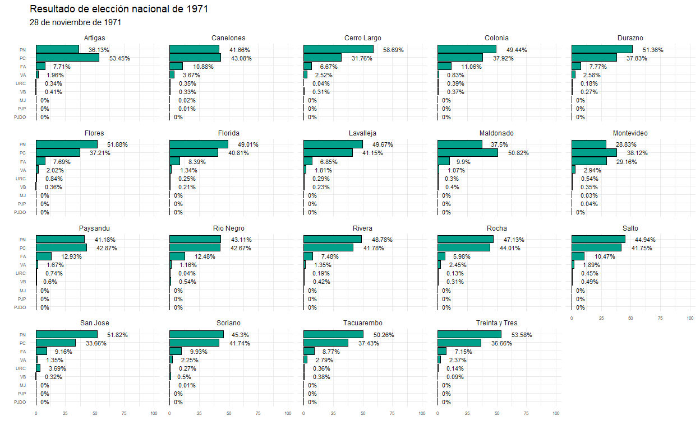
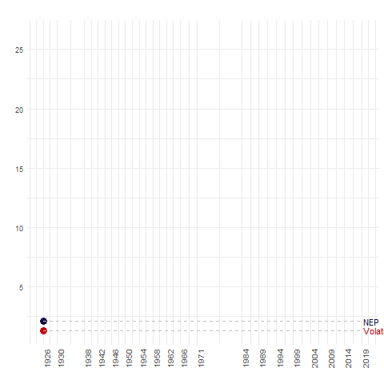

Boreluy 
Nicolás Schmidt, Antonio Cardarello, Diego Luján
Datos electorales de Uruguay 1918 - 2020.
Descripción
Este paquete de R proporciona un conjunto de datos que contienen resultados electorales al máximo nivel de desagregación posible y comparable entre elecciones en periodos de tiempo largo (mas de 100 años). Adicionalmente provee un conjunto de funciones que permiten obtener agregaciones de los datos (resultado por partido, por partido-departamento…).
El manual del paquete se puede encontrar aquí.
¿Por qué Boreluy? Al belga J. Borely se le atribuye la creación del doble voto simultaneo (DVS). En conjunto con la representación proporcional el DVS son dos ideas que caracterizaron particularmente al sistema electoral uruguayo. No solo en Uruguay generó influencia el belga, de quien no se conoce más que una única obra. En Uruguay se lo conoció a través de Justino Jiménez de Aréchaga (un destacado constitucionalista uruguayo) quien enviara un proyecto de ley en 1876 que incorporaba la representación proporcional, el doble voto simultaneo y el reconocimiento de los partidos políticos en Uruguay. El nombre del paquete lleva el nombre del belga con una pequeña modificación (la incorporación de la letra ‘u’) para señalar que hace referencia a Uruguay dado que Borely también influenció en otros países. El logo es una caricatura de una foto de Justino Jiménez de Aréchaga ya que no se conocen fotos de J. Borely 1.
Instalación
## Versión en desarrollo source("https://install-github.me/Nicolas-Schmidt/Boreluy")
Contenido del paquete
Funciones
| Función | Descripción |
|---|---|
nacional_uy |
Devuelve el resultado de una elección nacional en cantidad de votos y porcentaje. También se puede obtener el resultado discriminado por departamento (por_departamento = TRUE) y la cantidad de cargos al parlamento en caso de elecciones Legislativas o Presidenciales concurrentes con elecciones Legislativas. Si usa el argumento vbva.rm = TRUE se eliminan del calculo los votos en blanco y anulado (esto puede ser útil para elecciones como el Balotaje). |
departamental_uy |
Devuelve el resultado de una elección departamental en cantidad de votos y porcentaje. |
agrupar_partidos_uy |
Permite obtener el resultado electoral agrupando los partdos que obtuvieron menos de determinado umbral de votos en porcentaje (el umbral es definido por el usuario en la función) y tambien agrupa por defecto a los votos en blanco y a los votos anulados. |
as_esaps |
Convierte la salida de nacional_uy() al formatro de datos necesario para usar el paquete esaps que sirve para calcular indicadores relativos al sistema de partidos (volatilidad, número efectivo de partidos..) y sistema electoral (desproporcionalidad…). |
as_parliament |
Convierte la salida de nacional_uy() al formatro de datos necesario para usar el paquete ggparliament que permite graficar la composición del parlamento en formatro parlamento (“horseshoe”, “semicircle”, “circle”, “classroom”, “opposing_benches”). |
Conjuntos de datos
| Nombre | Descripción |
|---|---|
elecciones_uy |
Contiene los resultrados elctorales desagregado a nivel de departamento y en los casos que existe a nivel de sublema de las elecciones nacionales y departamentales desde 1918 hasta 2019. Para la desagregacion a nivel de fracción se incorporó un a variable que tiene el cadidat a la presidencia. Este criterio cambia a partir de la aparicion de las elecciones internas obligatorias. POr esta razón, está el sublema y y candidato a la presidencia. |
partidos_uy |
La undiad de esta base de datos son los partidos polítcos que alguna vez participaron en alguna elección en el período 1918 - 2019. |
Elecciones Uruguayas
library(Boreluy) resumen_elecciones_uy(tabla = FALSE) #> #> #> --- Cantidad de elecciones ------------------------------------ #> #> --> Presidencial : 20 (34%) #> --> Balotaje : 4 (7%) #> --> Departamental : 20 (34%) #> --> Legislativa : 10 (17%) #> --> Consejo Nacional de Administracion : 4 (7%) #> #> --------------------------------------------------------------- grafico_elecciones_uy()

Resultados electorales
library(ggplot2) library(magrittr) elec71 <- nacional_uy(eleccion = 1971) elec71 #> # A tibble: 9 x 8 #> Fecha Eleccion Partido Sigla Votos Porcentaje Diputados Senadores #> <date> <chr> <chr> <chr> <dbl> <dbl> <dbl> <dbl> #> 1 1971-11-28 Presiden~ Partido Colo~ PC 681624 39.8 41 14 #> 2 1971-11-28 Presiden~ Partido Naci~ PN 668822 39.0 40 12 #> 3 1971-11-28 Presiden~ Frente Amplio FA 304275 17.8 18 5 #> 4 1971-11-28 Presiden~ Voto Anulado VA 42508 2.48 0 0 #> 5 1971-11-28 Presiden~ Union Radica~ URC 8844 0.516 0 0 #> 6 1971-11-28 Presiden~ Voto en Blan~ VB 6139 0.358 0 0 #> 7 1971-11-28 Presiden~ Partido de J~ PJP 288 0.0168 0 0 #> 8 1971-11-28 Presiden~ Movimiento J~ MJ 241 0.0141 0 0 #> 9 1971-11-28 Presiden~ Partido Juve~ PJDO 25 0.00146 0 0 ggplot(data = elec71 , aes(x = reorder(Partido, Porcentaje), y = Porcentaje)) + geom_bar(stat = "identity", position = "stack", fill = "#00A08A", color = "black") + ylim(0,100) + coord_flip() + geom_text(aes(label = paste0(Porcentaje, "%")), hjust = -0.5, color = "gray9", size = 3) + labs(x = "", y = "", title = "Resultado de elección nacional de 1971", subtitle = "28 de noviembre de 1971") + theme_minimal()

elec71 <- nacional_uy(1971, por_departamento = TRUE) ggplot(data = elec71 , aes(x = reorder(Sigla, Porcentaje), y = Porcentaje)) + geom_bar(stat="identity", position = "stack", fill = "#00A08A", color = "black") + ylim(0,100) + coord_flip() + geom_text(aes(label = paste0(Porcentaje, "%")), hjust = -0.5, color = "gray9", size = 2) + labs(x = "", y = "", title = "Resultado de elección nacional de 1971", subtitle = "28 de noviembre de 1971") + theme_minimal() + theme(axis.text.x = element_text(size = 6), axis.text.y = element_text(size = 6)) + facet_wrap(~Departamento)

Parlamento
library(ggparliament) nacional_uy(eleccion = 1971) #> # A tibble: 9 x 8 #> Fecha Eleccion Partido Sigla Votos Porcentaje Diputados Senadores #> <date> <chr> <chr> <chr> <dbl> <dbl> <dbl> <dbl> #> 1 1971-11-28 Presiden~ Partido Colo~ PC 681624 39.8 41 14 #> 2 1971-11-28 Presiden~ Partido Naci~ PN 668822 39.0 40 12 #> 3 1971-11-28 Presiden~ Frente Amplio FA 304275 17.8 18 5 #> 4 1971-11-28 Presiden~ Voto Anulado VA 42508 2.48 0 0 #> 5 1971-11-28 Presiden~ Union Radica~ URC 8844 0.516 0 0 #> 6 1971-11-28 Presiden~ Voto en Blan~ VB 6139 0.358 0 0 #> 7 1971-11-28 Presiden~ Partido de J~ PJP 288 0.0168 0 0 #> 8 1971-11-28 Presiden~ Movimiento J~ MJ 241 0.0141 0 0 #> 9 1971-11-28 Presiden~ Partido Juve~ PJDO 25 0.00146 0 0 # creamos una funcion para graficar parlamento par_uy <- function(datos, titulo, mayoria, ...){ ggplot(datos, aes(x, y, colour = party_long)) + geom_parliament_seats() + geom_highlight_government(government == 1) + draw_majoritythreshold(n = mayoria, label = FALSE, type = 'semicircle') + geom_parliament_bar(colour = colour, party = party_long) + theme_ggparliament() + labs(colour = NULL, title = titulo, subtitle = "") + scale_colour_manual(values = datos$colour, limits = datos$party_long) }
Camara de Representantes y de Senadores
diputados <- nacional_uy(anio = 1971) %>% Boreluy::as_parliament(., camara = 1, color = c('#E81B23', '#3333FF', '#B4B4B4')) %>% par_uy(., titulo = "Camara de Representantes Uruguay 1971", mayoria = 51) senadores <- nacional_uy(anio = 1971) %>% Boreluy::as_parliament(., camara = 2, color = c('#E81B23', '#3333FF', '#B4B4B4')) %>% par_uy(., titulo = "Camara de Senadores Uruguay 1971", mayoria = 16) diputados senadores
Aplicaciones alternativas
datos <- purrr::map_df(c(1984, 1989, 1994, 1999, 2004), nacional_uy) %>% as_esaps() ## ~~~~~~~~~~~~~~~~~~~~~~~~~~~~~ ## Volatilidad electoral ## ~~~~~~~~~~~~~~~~~~~~~~~~~~~~~ esaps::evolat(datos, "Pedersen") #> election unit eVolat #> 1 1989 Uruguay 14.14 #> 2 1994 Uruguay 11.59 #> 3 1999 Uruguay 11.10 #> 4 2004 Uruguay 26.18 esaps::evolat(datos, "Powell and Tucker") #> election unit volat_A volat_B #> 1 1989 Uruguay 5.78 8.36 #> 2 1994 Uruguay 0.19 11.40 #> 3 1999 Uruguay 0.27 10.83 #> 4 2004 Uruguay 3.37 22.81 ## ~~~~~~~~~~~~~~~~~~~~~~~~~~~~~ ## Número efectivo de partidos ## ~~~~~~~~~~~~~~~~~~~~~~~~~~~~~ esaps::enp(datos[, -5]) #> election unit enp #> 1 1984 Uruguay 3.09 #> 2 1989 Uruguay 3.66 #> 3 1994 Uruguay 3.67 #> 4 1999 Uruguay 3.29 #> 5 2004 Uruguay 2.61 esaps::enp(na.omit(datos), enp_seats = TRUE) #> election unit enp enp_c #> 1 1984 Uruguay 3.09 1.81
Volatilidad electoral, Número efectivo de partidos e Índice de nacionalización partidario

Elecciones departamentales
Mantenedor
Nicolás Schmidt (nschmidt@cienciassociales.edu.uy)
Diseño de logo
Nadia Repetto (narepetto@gmail.com)
Notas
1 Ver Buquet, Daniel (2004) Elecciones y sistema electoral. En: El Uruguay del siglo XX. La Política. Ediciones de la Banda Oriental - Instituto de Ciencia Política.